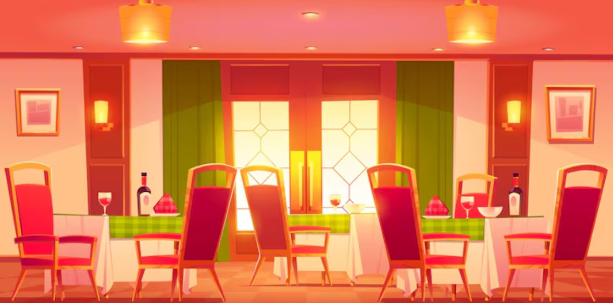

Управление персоналом
Оптимизируйте рабочие процессы, создавайте графики смен и управляйте командой эффективно
Создать график
Наши возможности
Планирование смен
Создавайте и оптимизируйте графики работы с учетом занятости сотрудников
Учет рабочего времени
Отслеживайте часы работы, сверхурочные и отпуска сотрудников
Расчет зарплат
Автоматический расчет заработной платы с учетом смен и бонусов
Аналитика
Получайте отчеты по эффективности работы персонала
Статистика за месяц
154
Отработанных смен
24
Активных сотрудника
98%
Выполнение графика
12
Новых заявок